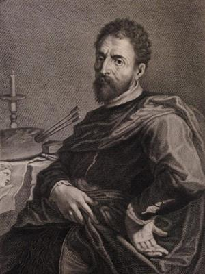

Periodo: 1527–1596
Ruolo: Pittore e architetto manierista
Attivo tra Bologna, Ancona e Milano, Tibaldi fu artista di grande rilievo del manierismo italiano. Nei manoscritti di Oretti compare come autore di opere religiose e decorative, tra cui la Madonna con Bambino.